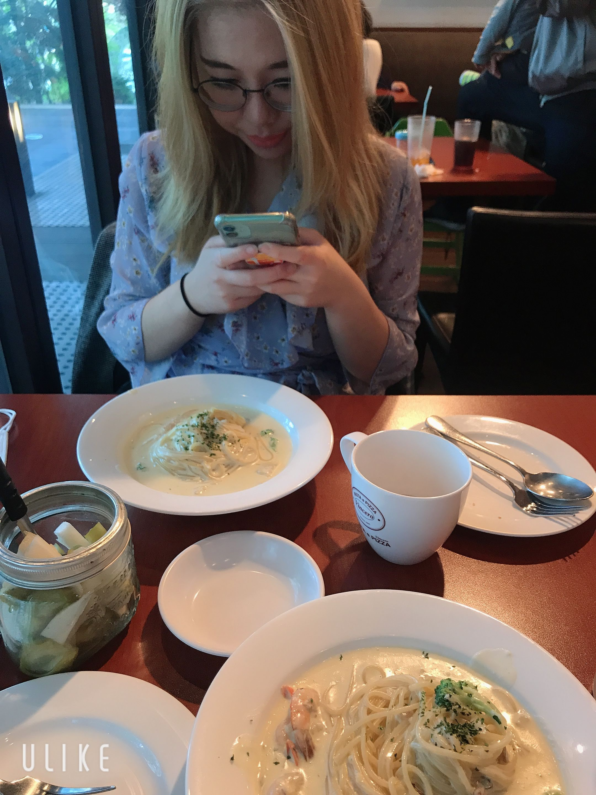

WHAT DID WE DO? / 우린 뭘 했을까요?

Even if it was the first time we laid eyes on each other, not through the pixels of iPhone screens and a barely-surviving internet connection, it felt like looking into the eyes of someone I’ve known for my entire life. Nervous as I was, stepping out of the bus with my heart bumping in my chest - I was finally coming home. The second you had your arms around me, the world melted away, and we were the only two people in a crowd of a bustling metropolis.
Escaping the hustle and bustle of a city center to a quainter part of town, accompanied by the perfect weather, was just the start of a day I would never forget. To be able to come to your hometown - see the sights and paths you walked through every day, hearing anecdotes about your night out with your friends as we eat lunch and go through the park, I always had to stop myself from possibly tearing my facial muscles from “excessive smiling syndrome”. The sights were beautiful, your hand wrapped around mine as we made our way around the wide expanse of nature and all its blessings, yet still, funnily enough - I couldn’t keep my eyes off you. Always making sure I was okay at every moment, letting me rest as I was tired despite the heat literally puncturing you. I’m truly thankful to know that you care, silently shown by subtle acts of pushing me away from the car paths and checking on me ever so often - I won’t ever forget how you made me feel like a princess.
Seeing you genuinely frustrated for the first time was quite endearing if I were to be completely honest - especially being able to see how hard you tried to get us into the amusement park, with the unhelpful circumstances and all. The lengths you went through to make sure our first date was an unforgettable one, “I always try hard”, just like you say every time, and I really believe you! Thankfully we got in, though. I think fate really wanted us to have the best time that day. Even if we got sick from all the rides, even actual neck pain at some point - I still had the goofiest smile on my face since I was finally hand-in-hand with someone I truly love. I wish we took more pictures, though! (We’ll have to do it next time >.<). Despite walking through the amusement park for literal hours, I didn’t find myself being tired at all! I only wanted to spend more time with you, as I always do.
As the night came to a close, it was finally our first time drinking together - as well as the first time you saw me (almost, not completely!) drunk. Here’s to hoping that this night will be one of many! The food was amazing, and I always trust your judgment when it comes to food - and your undying love for all things mala. I wish I slept more that day so I could hold my drink better, but I was glad to see that you took me back safely, even if I were sloppy and uncoordinated, to say the least. To end the night with soft ballads in the background, your arms around me and listening you whisper the sweetest things into my ear, it was a victory that I was able to keep my face from turning to a complete tomato. As I looked into your eyes that night, the very ones that I always tell you I love so much, I knew that I was grateful to fate and whatever celestial being out there to have brought us together in such weird and testing times. I couldn’t ask for someone better, and I would never do so. I love you.
From. 하은
4월 18일, 사귄 후로 처음 만나는 날 이였다. 코로나 바이러스 때문에 내가 하은이를 보러 대전으로 내려가지는 못하였지만, 하은이를 과천으로 데려올 수 있는 기회가 생겼다. 비록 부모님의 눈치를 보며 집을 나와 하은이를 만나러 가였지만, 드디어 만날 수 있다는 생각에 가슴이 쿵쾅쿵쾅 뛰었다. 들뜬 마음으로 고속터미널에 가서 하은이를 만났다. 만나자 마자 과천으로 돌아가, 알아봐둔 파스타 식당으로 갔다. 많이 가보진 않았지만, 많은 검색과 블로그를 통해 알아낸 맛집이였다. 정말 분위기도 좋고 맛있었다. 그렇게 일상 대화를 나누고, 과천 가로수길을 걸어다녔다. 하은이랑 데이트를 가는 날이라 그런지, 날씨가 정말 완벽했다. 하늘도 우리를 축복하시나 보다.
숙소에서 조금 쉬다, 서울대공원을 갔다. 날씨가 좋고, 주말이라 그런지 사람들이 정말 많았다. 대공원 산책로를 걷다가, 서울랜드를 갔다. 서울랜드를 들어가기도 전에 요금 정산 문제때문에 고생하긴 했지만, 30분만에 들어갔을 때, 너무 신나고 기대가 되었다. 내가 어릴 때 부터 항상 가던 서울랜드. 여자 친구랑 오니 어릴 때 친구들과 부모님이랑 왔을 때랑은 전혀 다른 느낌이었다. 놀이 기구들을 많이 타고, 밤이 되니 특별 이벤트 공연이 시작 되어 구경하러갔다. 어둑어둑해지고, 데코레이션들에서 빛이 나니 정말 이뻤다. 하은이와 공연을 즐기며 데코레이션들을 구경하니 이 보다 좋을 수가 없었다. 공연을 보며 옆을 보았는데 하은이가 정말 좋아하는 모습을 보고 감동했다 ㅠㅠ 데이트 코스를 짰을 때, 제발 하은이가 좋아했으면 좋겠다라고 생각했는데 생각대로 이루어지니 내가 더 행복했다.
서울랜드에서 나와, 범계에 술을 마시러 갔다. 내가 제일 좋아하는 술집, 코다차야로 하은이를 데려갔는데, 다행히도 내가 시킨 음식들을 모두 좋아하여 마음을 한시름 놓았다. 술을 마시며 이런 저런 깊은 대화들을 나누었다. 이런 대화들을 나누며 얼마나 내가 축복받았는 지를 새삼 느꼈다. 정말 대화도 잘 통하고 서로 맞는 점 들도 상당히 많았다. 이렇게 나를 사랑하는 사람이 내 곁에 있다니, 정말 행복하다.
첫 데이트를 하며 하은이에 대해서 더 많이 알게되었다. 내가 알게된 가장 큰 점은, 하은이는 나를 매우 사랑한다는 것이다. 서로 대화를 나눌 때, 눈을 한시도 떨어뜨리지 않고, 초롱초롱한 눈으로 나를 쳐다보며 집중하는 모습에 반했다.
앞으로 하은이와 함께 할 시간들이 상당히 기대가 된다. 둘이 놀러도 많이 가고, 공부도 같이 하고, 깊은 대화도 나누고 싶다. 좀 떨어져서 살지만, 내가 많이 찾아갈 것이다. 시간 나는대로 노력해서 하은이를 행복하게 해주고 싶다. 이 기회를 통해 하은이와 같이 성장할 수 있었으면 좋겠다.
이 글을 쓰며 그 동안 부모님이 하신 말씀들을 되새기게 되었다. 하은이가 쓴 글을 보고 솔직히 많이 놀랐다. 어떻게 저렇게 감성적이고, 필력이 저렇게 좋을까? 부모님께서는 항상 책을 많이 읽고 독후감을 써 나의 지식과 감수성을 쌓으라고 하셨는데 아직 나는 한참 부족한 것 같다. 앞으로 책도 많이 읽어서 더더욱 나은 글들을 쓰고 싶다. 이 일기들을 쓰며 한층 성장하고 싶다. 마지막으로 하은이에게 하고 싶은 말이 있다. 하은아, 우리의 길은 이제 시작이야. 나는 아직 부족하지만, 항상 너를 위해 노력하고 있어. 그 마음 알아줘서 고맙고, 내가 항상 더 잘해서 이 세상에서 가장 행복하게 만들어 줄게. 앞으로 여행도 많이 다니고, 좋은 시간 보냈으면 좋겠어. 사랑해❤
From. 종우